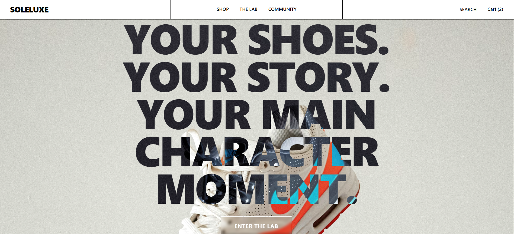

FEATURED
UX · Product
Soleluxe
As Soleluxe scales, it needs more than just a store. Our inspiration was to transform the shopping journey into an interactive playground, shifting the focus from passive browsing to active creation.